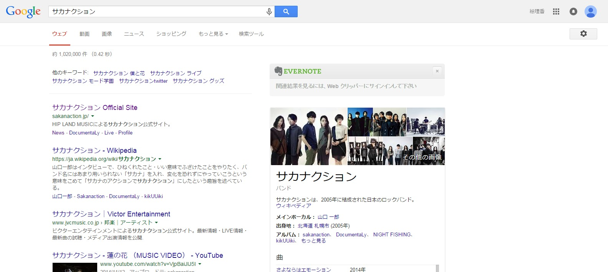
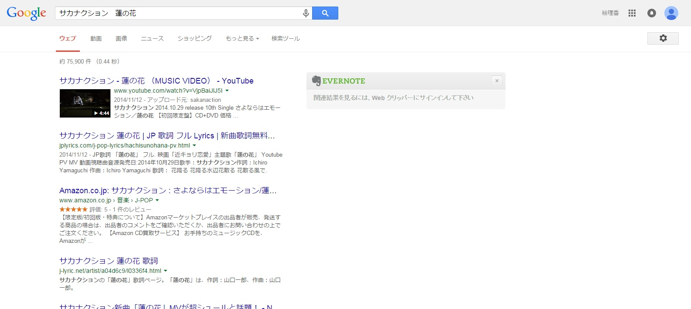

動画のSEO効果は高いことは立証済み！？
ニュース2015/08/025,821 views

動画のSEO効果については既に立証済み
動画のSEO効果については広く認められており、2010年、アメリカ調査会社のForrester Researchは、「動画の埋め込まれたページは、埋め込まれていないページと比べて約53倍の確率で検索結果の1ページ目に表示される」という調査結果を出しています。
参考：
ビデオSEOで53倍の成果、ソーシャルメディア経由ユーザーは検索経由ユーザーに比べ視聴時間が長い 【アメリカ最新動画活用事情】 (1/4)：MarkeZine（マーケジン）では、なぜテキストが含まれない動画にSEO効果があるのでしょうか？
動画SEOの手法とは？
現状、Googleの検索エンジンは動画の内容まで読み取ることはできません。 ですので、動画を評価する判断基準となるのは、「タイトル」「説明文」「タグ」などの動画に付随するテキスト情報です。
しかし、それらの情報だけで一般的なビッグワードで上位表示を狙ったとしても、上位に表示されている豊富なコンテンツを保有するホームページには勝てないでしょう。ではどのような対策であれば有効なのでしょうか。
Googleが上位表示させたいのは「ユーザーにとって有益な情報」です。ユーザーのニーズに沿った検索結果を出そうとする姿勢は首尾一貫しています。
そうなると、動画が上位表示される場合は、ユーザーが動画を見たいと予測できる検索キーワードに関しては、動画が上位表示されると考えられます。例えば、アーティスト名単体で検索した場合は、アーティストの公式ホームページがトップで表示され、「アーティスト名＋曲名」で検索した場合は、その曲のMVがTOPに表示される傾向にあります。
 アーティスト名単体の場合  アーティスト名＋曲名の場合動画SEOを行うのであれば現状はYouTubeを使うと◎
YouTubeは巨大な検索トラフィックを保有しており、Googleに次ぐ第2の検索エンジンと呼ばれています。
2006年にGoogleに買収され、グループ会社の1つとなっていますが、それが影響しているのかどうか定かではないにでせよ、動画が上位表示される場合はYouTubeが圧倒的に多い状況です。
登録やアップロードは非常に簡単なため、初心者向きでもあるので、もしこれから動画SEOを始めるのであればYouTubeを利用するのが無難でしょう。
YouTubeの登録方法についてはこちら
YouTubeチャンネルの開設方法まとめ
動画SEOについてはまだまだアルゴリズムが成熟しておらず、今後の改修によって様々な変化が起こっていくと予測できます。
動画の内容が読み込めない分、再生回数やチャンネル登録数、コメント数などの外部要因も評価の対象となっているという見方もあります。
参考：
YouTube SEO – 検索エンジンが動画の内容を格付けする仕組み | SEO Japan今後大きな変動が起こっていくものの、やはり最終的に評価されるのは「ユーザーにとって有益な情報」です。Googleはユーザーファーストを追求する企業だということを常に忘れず、小手先のテクニックに頼らず、テキスト・動画関係なく良質なコンテンツを作ることを心がけましょう。
YouTube広告（ユーチューブ広告）に関するカリキュラムを体系立てて学ぶことができます。
URL:https://ferret-plus.com/curriculums/youtube-adv
ferretからのマーケティング情報を受取る方法
ferretは毎日の売上にきっと繋がるマーケティング情報を発信中です。Twitter・メールマガジン・RSS・Facebookとお好みの方法をお選びいただければと思います。